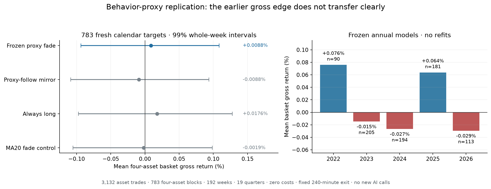

Three new mechanism families tested using existing decisions. Zero new trade calls. 29 credits preserved.
The prior 771-call allocation focused on replication and MA ablation. It missed the requested priority of finding a new mechanism. This report records the corrective analysis; it does not change or replace earlier failed validations.
Full findings · Evaluation contract · Earlier experiment inventory
A small model trained on earlier years reproduced 686/803 (85.43%) of later AI directions using supplied price/volume features and asset identifiers. That predicts the AI's choice, not the market. Unexpected choices did not establish a stable contrarian edge.
125 synchronized baskets, four assets, +0.5 long/−0.5 short notional when active, four-hour holding period. Dollar neutral does not mean beta neutral. Every inverted AI ranking lost on average. Confidence-follow is an uncertain opposite-hypothesis observation, not a promoted strategy.
| Ranking | Active baskets | Mean/active | Mean/opportunity | Remove best 3 |
|---|---|---|---|---|
| AI_direction__reverse | 48 | -0.157% | -0.060% | -0.254% |
| AI_direction__follow | 48 | +0.157% | +0.060% | +0.036% |
| AI_confidence__reverse | 123 | -0.133% | -0.131% | -0.242% |
| AI_confidence__follow | 123 | +0.133% | +0.131% | +0.066% |
| AI_stop_ATR_conviction__reverse | 125 | -0.038% | -0.038% | -0.138% |
| AI_stop_ATR_conviction__follow | 125 | +0.038% | +0.038% | -0.040% |
| price_momentum__reverse | 125 | +0.073% | +0.073% | -0.087% |
| price_momentum__follow | 125 | -0.073% | -0.073% | -0.165% |
| price_MA20_ATR__reverse | 125 | -0.047% | -0.047% | -0.202% |
| price_MA20_ATR__follow | 125 | +0.047% | +0.047% | -0.036% |
| price_ATR__reverse | 125 | +0.037% | +0.037% | -0.055% |
| price_ATR__follow | 125 | -0.037% | -0.037% | -0.143% |
Annual forward fits; fixed definitions; five-year scoring. Positive tiny samples do not count as verified strategies. All eleven rules fail the complete recommendation screen.
| Rule | Trades | Mean gross | Increment beyond raw direction | Promoted |
|---|---|---|---|---|
| 01_unexpected_SHORT_buy | 57 | -0.285% | -0.141% | No |
| 02_unexpected_LONG_sell | 60 | +0.294% | -0.050% | No |
| 03_confident_unexpected_SHORT_buy | 21 | -0.310% | -0.166% | No |
| 04_confident_unexpected_LONG_sell | 4 | +2.969% | +2.011% | No |
| 05_unexpected_exhaustion_fade | 32 | -0.373% | -0.557% | No |
| 06_unexpected_break_fade | 282 | +0.145% | -0.008% | No |
| 07_unexpected_rejection_fade | 204 | +0.019% | -0.108% | No |
| 08_unexpected_continuation_fade | 6 | -1.161% | -0.891% | No |
| 09_unexpected_counterevidence_fade | 92 | -0.146% | -0.380% | No |
| 10_repeat_disagree_follow_NO_MA | 10 | +1.071% | +0.586% | No |
| 11_stable_MA_call_flip_follow_NO_MA | 14 | -0.257% | -0.357% | No |
The old four-asset subset averaged +0.23349% over 96 baskets; the frozen rule averaged +0.00883% per basket over 783 different calendar blocks and 3132 asset positions. The samples have different calendar distributions, so this is a transfer test rather than a paired decay estimate. Weekly 99% interval: −0.09351% to +0.10856%. The first chronological half loses, and removing the three best baskets produces −0.01377%. Both frozen claims fail. No new AI calls or refits were made.
The paired advantage over MA20 fade is +0.01069 percentage points, with an interval crossing zero. Descriptive long positions average +0.02047% across 2022 trades; shorts average −0.01237% across 1110. Neither leg is promoted. Full transfer report · All 3132 asset trades · All 783 baskets

TP before SL within 240 minutes; a later minute closes back inside the target within 15 minutes; reverse at the next open and hold 60 minutes. 1020 asset windows across 645 original entry times; pooled means weight asset opportunities, not equal-capital calendar baskets. AI long/short labels below denote the new position.
| Policy | Trades | Mean gross | Remove best 3 events | Promoted |
|---|---|---|---|---|
| ai_all | 241 | -0.047% | -0.134% | No |
| ai_long | 175 | -0.083% | -0.207% | No |
| ai_short | 66 | +0.050% | -0.046% | No |
| donor_all | 234 | -0.109% | -0.165% | No |
| donor_long | 161 | -0.112% | -0.186% | No |
| donor_short | 73 | -0.102% | -0.233% | No |
| atr_same_ai_all | 273 | -0.019% | -0.111% | No |
| atr_same_ai_long | 202 | -0.042% | -0.169% | No |
| atr_same_ai_short | 71 | +0.047% | -0.055% | No |
| price_short_all | 301 | -0.087% | -0.184% | No |
| price_long_all | 200 | -0.085% | -0.139% | No |
Every underlying geometry, including skips, is saved in event_ledger.csv. MFE and MAE are favorable/adverse excursions during the new 60-minute position.
241 positions
| Window | Asset | Cohort | Position | Entry time | Exit time | Entry | Exit | Gross | MFE | MAE | Original AI reason |
|---|---|---|---|---|---|---|---|---|---|---|---|
| 12fa31510e | SOL-USD | multi500 | long | 2020-10-29 22:39:00 | 2020-10-29 23:39:00 | 1.4557 | 1.4303 | -1.745% | +0.014% | -2.823% | Below declining moving averages; weak-volume consolidation favors continuation lower, with stop above recent swing high. |
| 6698053602 | BTC-USD | multi500 | long | 2020-11-04 07:50:00 | 2020-11-04 08:50:00 | 13598.4 | 13640 | +0.306% | +0.636% | -0.613% | Price below declining short averages; recent lower closes favor continuation toward support. |
| 10945f191c | DOGE-USD | multi500 | long | 2020-11-04 07:58:00 | 2020-11-04 08:58:00 | 0.002497 | 0.002508 | +0.441% | +0.681% | -0.200% | High-volume selloff, weakening closes below MA20; downside momentum favors a short toward prior support. |
| 4754198bb2 | ETH-USD | multi500 | long | 2020-11-04 07:50:00 | 2020-11-04 08:50:00 | 380.44 | 380.37 | -0.018% | +0.147% | -1.243% | Below both averages; weak rebound and recent downside break favor continuation toward lower support. |
| 6a51fe3a6d | SOL-USD | multi500 | long | 2020-11-04 07:57:00 | 2020-11-04 08:57:00 | 1.3486 | 1.3597 | +0.823% | +1.090% | -0.267% | Primary downtrend below falling MA50; rebound tests resistance near 100 after weak consolidation. |
| e15d34afe4 | SOL-USD | next280 | long | 2020-11-21 03:53:00 | 2020-11-21 04:53:00 | 2.069 | 2.0652 | -0.184% | +0.174% | -1.822% | Below declining moving averages; rebound failed near 101, preserving short-term bearish momentum. |
| d6b5c0e180 | BTC-USD | multi500 | long | 2020-11-26 03:10:00 | 2020-11-26 04:10:00 | 18165.3 | 18060 | -0.580% | +0.797% | -5.864% | Breakdown below declining averages on expanding volume favors continued downside despite nearby 100 support. |
| ee4746cb87 | DOGE-USD | multi500 | long | 2020-11-26 03:10:00 | 2020-11-26 04:10:00 | 0.003495 | 0.003384 | -3.176% | +1.316% | -8.412% | Downtrend below falling averages; fresh breakdown and rising volume favor continuation despite nearby support. |
| 208f3bfcb8 | ETH-USD | multi500 | long | 2020-11-26 03:09:00 | 2020-11-26 04:09:00 | 543.32 | 534.41 | -1.640% | +0.861% | -8.016% | Persistent downtrend below declining averages; breakdown closes near lows on rising volume. |
| 6b397c477a | SOL-USD | multi500 | long | 2020-11-26 03:10:00 | 2020-11-26 04:10:00 | 2.0623 | 1.945 | -5.688% | +1.411% | -14.115% | Strong downtrend below moving averages; weak bounce after high-volume breakdown favors continuation. |
| a67eb81a0f | SOL-USD | next280 | long | 2020-11-30 08:11:00 | 2020-11-30 09:11:00 | 1.9176 | 1.9086 | -0.469% | +0.329% | -0.553% | Below falling short-term average; weak-volume bounce and lower highs favor continuation lower. |
| 9906ab94f2 | DOGE-USD | multi500 | short | 2020-12-16 09:41:00 | 2020-12-16 10:41:00 | 0.003227 | 0.003245 | -0.558% | +0.062% | -0.930% | Price reclaimed both averages with improving late momentum; stop sits below nearby consolidation support. |
| 952cec1ec4 | SOL-USD | multi500 | long | 2020-12-16 08:06:00 | 2020-12-16 09:06:00 | 1.6519 | 1.6604 | +0.515% | +1.828% | -0.357% | Price tests MA50 resistance after a low-volume rebound; broader visible trend remains bearish. |
| 1cb341943b | DOGE-USD | multi500 | short | 2021-01-05 23:05:00 | 2021-01-06 00:05:00 | 0.010025 | 0.010034 | -0.090% | +3.551% | -2.244% | Price holds above rising averages; recent recovery favors upside despite subdued volume. |
| ed7b775ed2 | SOL-USD | multi500 | long | 2021-01-05 23:20:00 | 2021-01-06 00:20:00 | 2.128 | 2.0819 | -2.166% | +0.893% | -3.195% | Price below declining averages; weak-volume consolidation favors bearish continuation. |
| e074c0427b | BTC-USD | multi500 | long | 2021-01-09 16:56:00 | 2021-01-09 17:56:00 | 40077.6 | 40519.3 | +1.102% | +1.489% | -0.503% | Failed rebound below MA20 after high-volume breakdown; weak volume favors continuation toward prior support. |
| 0d2e85d3b3 | DOGE-USD | multi500 | long | 2021-01-09 16:16:00 | 2021-01-09 17:16:00 | 0.010033 | 0.010086 | +0.528% | +1.944% | -2.093% | Price rejected near MA20 amid weak volume; downside retest of recent 99 support is favored. |
| be5a3e2183 | SOL-USD | multi500 | long | 2021-01-09 16:53:00 | 2021-01-09 17:53:00 | 3.0219 | 3.2402 | +7.224% | +8.667% | -3.703% | Below both moving averages; weak bounce after high-volume breakdown favors retest lower. |
| 15a427b224 | BTC-USD | multi500 | long | 2021-01-17 05:09:00 | 2021-01-17 06:09:00 | 35762.3 | 35709.8 | -0.147% | +0.410% | -1.349% | Below declining MA50; weak-volume rebound into resistance favors downside retest. |
| 8854859814 | DOGE-USD | multi500 | long | 2021-01-17 05:26:00 | 2021-01-17 06:26:00 | 0.00915 | 0.009035 | -1.257% | +0.404% | -2.131% | Bearish close below both averages after rejection near 101; downside momentum favors short. |
| 0aebb63a9d | ETH-USD | multi500 | long | 2021-01-17 05:23:00 | 2021-01-17 06:23:00 | 1219.08 | 1213.86 | -0.428% | +0.646% | -1.143% | Price rejected near MA50 on weak volume; recent bounce lacks follow-through. |
| 12b52ff664 | SOL-USD | multi500 | short | 2021-01-17 03:33:00 | 2021-01-17 04:33:00 | 3.6474 | 3.7179 | -1.933% | +2.010% | -5.036% | Price reclaimed resistance above both averages; recent higher lows support continuation despite muted volume. |
| 69426c1e9a | BTC-USD | multi500 | short | 2021-01-25 00:32:00 | 2021-01-25 01:32:00 | 32670.7 | 32617.1 | +0.164% | +0.620% | -0.570% | High-volume breakout above moving averages; current pullback holds prior breakout area. |
| 19f7319932 | ETH-USD | multi500 | short | 2021-01-24 23:56:00 | 2021-01-25 00:56:00 | 1399.14 | 1466.19 | -4.792% | +1.003% | -5.884% | Fresh high-volume breakout above rising moving averages; stop below recent breakout support. |
| fac3234501 | SOL-USD | next50 | short | 2021-02-05 02:10:00 | 2021-02-05 03:10:00 | 6.8531 | 6.8293 | +0.347% | +1.342% | -0.779% | Strong trend above rising averages; high-volume rebound reclaimed 100 after a brief pullback. |
| 18f630f258 | BTC-USD | multi500 | long | 2021-02-08 04:00:00 | 2021-02-08 05:00:00 | 38120.8 | 38620.7 | +1.311% | +1.572% | -0.220% | Rejection near recent highs, below MA20, and weakening volume favor short-term pullback. |
| cd61ef8fb5 | SOL-USD | next280 | long | 2021-02-25 23:53:00 | 2021-02-26 00:53:00 | 13.8754 | 13.6105 | -1.909% | +0.281% | -3.704% | Strong downtrend below falling averages; rebound lacks decisive reversal volume. |
| 63f0407776 | DOGE-USD | multi500 | long | 2021-03-04 18:09:00 | 2021-03-04 19:09:00 | 0.049411 | 0.048473 | -1.898% | +0.249% | -3.827% | Price is rejecting MA50 resistance after a volatile rebound; downside trend structure remains intact. |
| 60ad73f22a | SOL-USD | original100 | long | 2021-03-08 04:21:00 | 2021-03-08 05:21:00 | 13.4101 | 13.5563 | +1.090% | +1.163% | -0.059% | High-volume bearish breakdown below both moving averages signals near-term downside momentum. |
| 250afdcc54 | SOL-USD | next280 | long | 2021-03-21 10:04:00 | 2021-03-21 11:04:00 | 13.778 | 13.7423 | -0.259% | +0.388% | -0.405% | Downtrend below falling averages; current rejection and large lower wick favor continuation after weak bounce. |
| e156ad03fa | BTC-USD | multi500 | short | 2021-04-09 00:04:00 | 2021-04-09 01:04:00 | 58180 | 58407.8 | -0.392% | +0.167% | -0.492% | Price holds MA50 support; recent selloff lacks volume and current bar shows a rebound attempt. |
| 8c48214bf0 | DOGE-USD | multi500 | long | 2021-05-13 08:06:00 | 2021-05-13 09:06:00 | 0.42397 | 0.41245 | -2.717% | +0.545% | -4.248% | Below both moving averages; weak-volume consolidation beneath resistance favors downside retest. |
| 3c2b973cfd | ETH-USD | multi500 | long | 2021-05-13 08:22:00 | 2021-05-13 09:22:00 | 3911.74 | 3815.82 | -2.452% | +0.747% | -2.678% | Price stalls below declining MA50 on weak volume; nearby resistance favors a short reversal. |
| a8bab3e242 | SOL-USD | multi500 | long | 2021-05-13 09:01:00 | 2021-05-13 10:01:00 | 43.009 | 41.763 | -2.897% | +0.802% | -4.669% | Price tests declining MA50 resistance after low-volume rebound; downside toward recent consolidation favored. |
| c486f3e332 | BTC-USD | multi500 | long | 2021-05-19 10:42:00 | 2021-05-19 11:42:00 | 39289.7 | 38539.6 | -1.909% | +0.739% | -8.118% | Bounce into resistance is fading; price remains below declining MA50 with weakening volume. |
| db38f3a759 | DOGE-USD | multi500 | long | 2021-05-19 10:40:00 | 2021-05-19 11:40:00 | 0.40494 | 0.37954 | -6.273% | +0.659% | -18.790% | Rejection from 103 and broader downtrend favor a retest below nearby MA20 support. |
| 1719425c50 | ETH-USD | multi500 | long | 2021-05-19 10:54:00 | 2021-05-19 11:54:00 | 2844.79 | 2709.44 | -4.758% | +0.947% | -14.510% | Downtrend persists below declining averages; weak rebound failed near 102, with price slipping beneath MA20. |
| 1a2c30f907 | SOL-USD | multi500 | long | 2021-05-19 11:36:00 | 2021-05-19 12:36:00 | 44.273 | 41.243 | -6.844% | +2.378% | -10.103% | Strong downtrend, lower highs, and decisive breakdown below 103 support favor continuation. |
| d332b575d1 | SOL-USD | paired90 | long | 2021-05-23 16:19:00 | 2021-05-23 17:19:00 | 21.242 | 21.83 | +2.768% | +11.473% | -9.957% | Downtrend persists below falling averages; rebound rejected near MA20, favoring retest of recent lows. |
| 91fda21e1f | SOL-USD | original100 | short | 2021-06-03 05:59:00 | 2021-06-03 06:59:00 | 36.594 | 36.946 | -0.962% | +0.514% | -1.834% | Strong breakout above rising averages; modest pullback likely but momentum remains favorable. |
| 81b474a543 | SOL-USD | multi500 | short | 2021-06-23 08:29:00 | 2021-06-23 09:29:00 | 31.25 | 30.87 | +1.216% | +3.968% | -0.080% | Price reclaimed MA20 after consolidation; prevailing impulse remains bullish despite subdued volume. |
| 611159cced | BTC-USD | multi500 | long | 2021-07-01 19:25:00 | 2021-07-01 20:25:00 | 32885.6 | 33262.3 | +1.145% | +1.230% | -0.649% | Rejection from low-volume bounce, bearish moving-average alignment, and elevated-volume reversal favor downside continuation. |
| e9d752e5ac | DOGE-USD | multi500 | long | 2021-07-01 19:26:00 | 2021-07-01 20:26:00 | 0.24363 | 0.24354 | -0.037% | +0.484% | -1.490% | Price below both averages; weak low-volume consolidation favors a modest downside break. |
| dd33e3deef | ETH-USD | multi500 | long | 2021-07-01 19:38:00 | 2021-07-01 20:38:00 | 2090.49 | 2113.79 | +1.115% | +1.412% | -0.428% | Rejected near MA50 resistance; fading momentum and weak volume favor retest of recent lows. |
| e43af1fbaf | SOL-USD | paired90 | long | 2021-07-02 05:51:00 | 2021-07-02 06:51:00 | 31.746 | 31.987 | +0.759% | +1.049% | -1.254% | Persistent lower highs below both moving averages; weak rebound at 100 support favors continuation lower. |
| a5fe89ce43 | SOL-USD | paired90 | long | 2021-07-07 23:20:00 | 2021-07-08 00:20:00 | 36.763 | 36.681 | -0.223% | +0.503% | -1.175% | Repeated rejection near 101.5 and weakening closes favor a pullback toward the rising MA20. |
| a0983022cd | BTC-USD | multi500 | long | 2021-07-12 20:06:00 | 2021-07-12 21:06:00 | 32715.9 | 32900 | +0.563% | +0.838% | -0.201% | Persistent downtrend below falling averages; elevated selling volume and breakdown near lows favor continuation. |
| 0484353c6d | SOL-USD | next280 | short | 2021-07-21 04:18:00 | 2021-07-21 05:18:00 | 24.629 | 24.953 | -1.316% | +0.268% | -2.505% | High-volume breakout above moving averages with strong short-term momentum; stop below recent consolidation. |
| e45f8b5ce2 | DOGE-USD | multi500 | short | 2021-07-26 04:33:00 | 2021-07-26 05:33:00 | 0.22644 | 0.22351 | +1.294% | +1.488% | -1.678% | High-volume breakout above consolidation and rising moving averages supports continuation despite elevated volatility. |
| e9403142fe | ETH-USD | multi500 | short | 2021-07-26 06:23:00 | 2021-07-26 07:23:00 | 2385.04 | 2365.14 | +0.834% | +1.763% | -0.305% | Strong trend above rising averages; tight consolidation near 100 favors continuation despite spike volatility. |
| 4789acbacc | SOL-USD | next50 | long | 2021-08-07 06:41:00 | 2021-08-07 07:41:00 | 39.186 | 39.658 | +1.205% | +1.488% | -0.789% | Rejection from 100.8 resistance after weak-volume range; downside mean reversion favored. |
| dc49481d80 | DOGE-USD | multi500 | short | 2021-08-27 11:27:00 | 2021-08-27 12:27:00 | 0.27997 | 0.27742 | +0.911% | +1.186% | -0.546% | Price breaks local resistance above rising MA20 and MA50; momentum favors continuation despite light volume. |
| bbe286a177 | DOGE-USD | multi500 | short | 2021-09-01 12:24:00 | 2021-09-01 13:24:00 | 0.28465 | 0.28082 | +1.346% | +1.567% | -0.193% | Uptrend remains intact; current bar strongly rejects the pullback near MA20 support. |
| fc61ae6ef8 | SOL-USD | next280 | long | 2021-09-10 07:46:00 | 2021-09-10 08:46:00 | 184.241 | 178.621 | -3.050% | +0.487% | -4.934% | Rejection from 101.7, below both moving averages, with weak volume and nearby support vulnerable. |
| 51dc4e0b10 | SOL-USD | next280 | long | 2021-09-15 12:43:00 | 2021-09-15 13:43:00 | 156.939 | 156.741 | -0.126% | +0.568% | -1.169% | Below falling MA20; weak-volume bounce and lower-high structure favor retest lower. |
| 26b1044f0a | BTC-USD | multi500 | long | 2021-09-16 20:55:00 | 2021-09-16 21:55:00 | 47140.7 | 47513.6 | +0.791% | +1.168% | -0.126% | Below both moving averages; rebound lacks volume and remains beneath nearby resistance. |
| 192151c120 | DOGE-USD | multi500 | long | 2021-09-16 20:29:00 | 2021-09-16 21:29:00 | 0.2378 | 0.23661 | -0.500% | +0.198% | -2.019% | Price remains below MA50 after weak, low-volume rebound; broader momentum favors retest of recent lows. |
| 37c613e733 | SOL-USD | multi500 | long | 2021-09-16 20:28:00 | 2021-09-16 21:28:00 | 150.181 | 149.962 | -0.146% | +0.738% | -1.779% | Below declining averages; weak rebound after high-volume selloff favors continuation. |
| 3259409288 | SOL-USD | next280 | long | 2021-09-19 22:56:00 | 2021-09-19 23:56:00 | 151.8 | 152.987 | +0.782% | +1.581% | -0.375% | Downtrend below falling averages; weak rebound failed and price retests support with bearish momentum. |
| 2bf89edb35 | SOL-USD | next280 | short | 2021-09-26 12:26:00 | 2021-09-26 13:26:00 | 137.806 | 135.816 | +1.444% | +1.579% | -0.149% | High-volume breakout holds above both averages; consolidation near 100 favors continuation toward prior spike high. |
| 5af7bca73e | BTC-USD | multi500 | short | 2021-10-14 01:05:00 | 2021-10-14 02:05:00 | 58040.8 | 58254.6 | -0.368% | +0.194% | -0.833% | Uptrend above rising averages; tight consolidation near highs favors continuation despite muted volume. |
| cc44e75396 | DOGE-USD | multi500 | short | 2021-10-14 00:28:00 | 2021-10-14 01:28:00 | 0.23673 | 0.23753 | -0.338% | +0.689% | -1.555% | Uptrend above rising averages; consolidation near highs favors continuation despite modest volume. |
| a5c3aa1e04 | SOL-USD | next280 | long | 2021-10-16 21:57:00 | 2021-10-16 22:57:00 | 156.931 | 158.143 | +0.772% | +0.966% | -0.198% | Price remains below declining MA20 and MA50; weak-volume consolidation near lows favors continuation. |
| 73a42ed8d6 | SOL-USD | next280 | short | 2021-11-13 14:11:00 | 2021-11-13 15:11:00 | 232.109 | 236.158 | -1.744% | +0.033% | -1.867% | High-volume breakout above moving averages with strong consecutive upside momentum. |
| 12ce620526 | BTC-USD | multi500 | short | 2021-11-21 17:03:00 | 2021-11-21 18:03:00 | 59906.9 | 59444.9 | +0.771% | +0.796% | -0.018% | High-volume breakout above moving averages, with recent higher highs supporting short-term upside continuation. |
| 4107788ab2 | SOL-USD | original100 | long | 2021-11-24 02:23:00 | 2021-11-24 03:23:00 | 217.517 | 215.829 | -0.776% | +0.198% | -1.500% | Persistent lower highs below MA20; weak-volume bounce at MA50 support favors continuation lower. |
| 91cb3625fd | SOL-USD | next280 | long | 2021-12-09 23:59:00 | 2021-12-10 00:59:00 | 181.156 | 181.6 | +0.245% | +1.903% | -0.159% | Low-volume rebound stalls beneath MA50 and nearby resistance; broader visible trend remains bearish. |
| f7af86af54 | SOL-USD | original100 | long | 2021-12-13 14:02:00 | 2021-12-13 15:02:00 | 164 | 161.62 | -1.451% | +0.122% | -1.829% | Rejection near 101 and declining MA50 favor downside continuation despite nearby MA20 support. |
| b25e0e7b17 | SOL-USD | paired90 | long | 2021-12-20 09:35:00 | 2021-12-20 10:35:00 | 172.6 | 172.3 | -0.174% | +0.197% | -0.516% | Below declining moving averages; weak consolidation after sharp breakdown favors downside continuation. |
| 3dee20e509 | SOL-USD | original100 | long | 2022-01-05 17:38:00 | 2022-01-05 18:38:00 | 166.9 | 164.27 | -1.576% | +0.102% | -2.606% | Price remains below converged moving averages after a high-volume breakdown; weak rebound favors continuation. |
| 4de5fd2070 | ETH-USD | multi500 | long | 2022-01-22 14:57:00 | 2022-01-22 15:57:00 | 2422.1 | 2393.68 | -1.173% | +0.359% | -1.803% | Bounce reaches declining MA50 resistance; broader downtrend and nearby support-to-target favor mean reversion lower. |
| 83d3e72d0e | SOL-USD | original100 | short | 2022-02-14 14:27:00 | 2022-02-14 15:27:00 | 97.24 | 97.04 | +0.206% | +0.648% | -0.699% | Strong high-volume breakout, price above rising averages; stop below recent breakout support. |
| 291e96f2f5 | SOL-USD | paired90 | short | 2022-02-22 10:28:00 | 2022-02-22 11:28:00 | 85.48 | 84.73 | +0.877% | +1.287% | -0.573% | Recent higher lows and MA20 support favor breakout continuation despite nearby declining MA50 resistance. |
| eae0c0ea1e | SOL-USD | next280 | short | 2022-02-24 20:00:00 | 2022-02-24 21:00:00 | 90.76 | 90.22 | +0.595% | +2.049% | -4.969% | Strong breakout momentum, elevated volume, and price above rising moving averages favor continuation. |
| f2d094003c | SOL-USD | original100 | long | 2022-03-06 23:25:00 | 2022-03-07 00:25:00 | 84.23 | 82.33 | -2.256% | +0.819% | -2.885% | Below falling averages; rebound failed near resistance and recent candles resumed bearish drift. |
| 59a5101c14 | SOL-USD | next280 | short | 2022-03-29 11:48:00 | 2022-03-29 12:48:00 | 112.93 | 114.52 | -1.408% | +0.283% | -1.629% | Price reclaimed MA20 at support; broader uptrend persists despite low-volume consolidation. |
| 0c2aefb38b | DOGE-USD | multi500 | long | 2022-03-31 13:40:00 | 2022-03-31 14:40:00 | 0.14397 | 0.14108 | -2.007% | +0.500% | -4.112% | Price remains below declining short-term momentum after failed rebound; MA20 overhead offers nearby resistance. |
| c613cff86a | DOGE-USD | multi500 | short | 2022-04-19 00:17:00 | 2022-04-19 01:17:00 | 0.14058 | 0.14066 | -0.057% | +0.142% | -0.598% | Bullish trend above rising averages; tight consolidation near highs favors continuation despite subdued recent volume. |
| e2d58e41bb | SOL-USD | multi500 | short | 2022-04-19 00:34:00 | 2022-04-19 01:34:00 | 103.37 | 102.87 | +0.484% | +0.542% | -0.387% | Uptrend remains intact above rising averages; tight consolidation near highs favors continuation. |
| 116912a84f | SOL-USD | paired90 | long | 2022-04-23 04:24:00 | 2022-04-23 05:24:00 | 98.59 | 99.94 | +1.369% | +1.450% | -0.345% | Price below falling averages; weak rebound and bearish close favor continuation lower. |
| 39a03cb676 | SOL-USD | original100 | long | 2022-05-06 07:43:00 | 2022-05-06 08:43:00 | 81.18 | 82.36 | +1.454% | +2.242% | -0.419% | Weak rebound beneath declining moving averages after high-volume breakdown; downside retest favored. |
| 618243dd5f | SOL-USD | paired90 | long | 2022-05-09 10:30:00 | 2022-05-09 11:30:00 | 72.77 | 71.22 | -2.130% | +0.399% | -3.119% | Below declining averages; rebound rejected, with renewed downside momentum near support. |
| 38944abdde | SOL-USD | paired90 | long | 2022-05-20 12:51:00 | 2022-05-20 13:51:00 | 51.9 | 52.07 | +0.328% | +1.522% | -0.886% | High-volume rejection near 101 resistance after extended rally favors short-term pullback. |
| 508bc74b51 | SOL-USD | next280 | long | 2022-06-08 18:39:00 | 2022-06-08 19:39:00 | 38.7 | 38.95 | +0.646% | +1.085% | -0.388% | Rejection from recent highs and bearish current bar favor short-term pullback despite moving-average support. |
| cb35675c3c | SOL-USD | paired90 | long | 2022-06-10 00:18:00 | 2022-06-10 01:18:00 | 39.13 | 39.7 | +1.457% | +1.789% | -0.256% | Below falling moving averages; weak low-volume bounce favors continuation toward recent lows. |
| 698bd82acd | SOL-USD | next280 | short | 2022-06-12 08:29:00 | 2022-06-12 09:29:00 | 33.51 | 33.16 | +1.044% | +2.119% | -0.537% | High-volume rebound reclaimed MA20 after capitulation; momentum favors near-term continuation despite broader downtrend. |
| 55b76ec79f | SOL-USD | paired90 | long | 2022-06-14 02:02:00 | 2022-06-14 03:02:00 | 26.33 | 26.89 | +2.127% | +3.038% | -1.975% | Price is below declining short-term averages after a failed rebound; bearish momentum and volume favor continuation. |
| c75f1624d9 | SOL-USD | paired90 | short | 2022-06-21 05:22:00 | 2022-06-21 06:22:00 | 36.11 | 37.24 | -3.129% | +0.083% | -4.376% | Price reclaimed both moving averages after support test; current bullish close favors continuation despite muted recent volume. |
| ab7d77610d | SOL-USD | paired90 | long | 2022-06-29 12:58:00 | 2022-06-29 13:58:00 | 34.21 | 34.35 | +0.409% | +1.315% | -1.812% | Downtrend below both moving averages; rebound lacks convincing volume after high-volume selloff. |
| b9721fc71c | SOL-USD | next50 | short | 2022-07-02 22:02:00 | 2022-07-02 23:02:00 | 33.82 | 33.48 | +1.005% | +1.124% | -0.237% | Bullish breakout closes at resistance with price above rising MA20 and MA50. |
| 98a9a9540d | SOL-USD | paired90 | long | 2022-07-08 12:49:00 | 2022-07-08 13:49:00 | 36.59 | 37.04 | +1.230% | +1.913% | -0.164% | Downtrend persists below falling averages; current bounce tests resistance near 100. |
| 0a91f42148 | SOL-USD | next280 | long | 2022-07-17 23:56:00 | 2022-07-18 00:56:00 | 38.63 | 38.79 | +0.414% | +1.631% | -0.337% | Price rejected near MA50; weak volume and fading bounce favor downside retest. |
| 02c71ec26e | SOL-USD | original100 | short | 2022-08-14 00:44:00 | 2022-08-14 01:44:00 | 47.2 | 46.53 | +1.419% | +2.458% | -0.085% | Price reclaimed converging moving averages after retracement; recent candles show support near 99.3. |
| 4ed9fb6a2c | SOL-USD | paired90 | short | 2022-08-30 10:31:00 | 2022-08-30 11:31:00 | 33.06 | 32.66 | +1.210% | +1.391% | -0.030% | Price holds above rising MA20 and MA50; low-volume consolidation near 100 favors upside continuation. |
| 5adbb4ae2c | SOL-USD | next280 | long | 2022-09-09 17:42:00 | 2022-09-09 18:42:00 | 34.53 | 34.53 | +0.000% | +0.579% | -0.348% | Price below both averages; rebound stalled near resistance and latest candle resumes selling. |
| 1b6e320471 | BTC-USD | multi500 | short | 2022-09-27 03:01:00 | 2022-09-27 04:01:00 | 20000 | 20119.6 | -0.598% | +0.240% | -1.480% | Strong breakout with expanding volume and trend alignment; stop allows normal volatility. |
| a909128af9 | ETH-USD | multi500 | short | 2022-09-27 03:18:00 | 2022-09-27 04:18:00 | 1383.78 | 1383.37 | +0.030% | +0.392% | -0.411% | High-volume breakout above rising averages supports momentum continuation; stop sits below current breakout structure. |
| 2ee2807f56 | SOL-USD | next50 | short | 2022-10-04 06:37:00 | 2022-10-04 07:37:00 | 33.37 | 33.6 | -0.689% | +0.120% | -0.959% | Price regained both rising averages; current bullish recovery favors upside continuation despite nearby resistance. |
| 36b3be14bd | DOGE-USD | multi500 | long | 2022-10-07 16:26:00 | 2022-10-07 17:26:00 | 0.06166 | 0.06162 | -0.065% | +0.989% | -0.405% | High-volume breakdown, weak rebound, and price consolidates below declining moving averages. |
| de3e176cdc | ETH-USD | multi500 | long | 2022-10-07 18:34:00 | 2022-10-07 19:34:00 | 1319.25 | 1322.95 | +0.280% | +0.603% | -0.046% | Failed rebound below declining MA20 and MA50; selling pressure likely resumes toward recent lows. |
| 36c09bf20f | SOL-USD | next280 | long | 2022-10-10 23:47:00 | 2022-10-11 00:47:00 | 31.96 | 31.42 | -1.690% | +0.063% | -2.910% | High-volume breakdown, weak rebound, and price remains below declining moving averages. |
| 556347220e | BTC-USD | multi500 | long | 2022-10-12 12:32:00 | 2022-10-12 13:32:00 | 19036.5 | 19044.2 | +0.040% | +0.753% | -0.344% | Momentum has rolled below MA20; weak recent volume and lower highs favor a retest below MA50. |
| b08d098dab | DOGE-USD | multi500 | long | 2022-10-12 12:32:00 | 2022-10-12 13:32:00 | 0.0597 | 0.05943 | -0.452% | +0.670% | -0.536% | Price broke below converged moving averages with accelerating late selling and modest volume confirmation. |
| 6bff5303d8 | ETH-USD | multi500 | long | 2022-10-12 12:32:00 | 2022-10-12 13:32:00 | 1291.9 | 1291.41 | -0.038% | +1.053% | -0.482% | Momentum has faded below MA20 after volume-backed rejection near recent highs. |
| d8f04303de | SOL-USD | multi500 | long | 2022-10-12 12:32:00 | 2022-10-12 13:32:00 | 31.04 | 31.01 | -0.097% | +0.999% | -0.451% | Price slipped below MA20 after momentum faded; repeated 100.26 resistance supports downside continuation. |
| 64a30a9454 | SOL-USD | next280 | short | 2022-10-17 10:06:00 | 2022-10-17 11:06:00 | 30.51 | 30.56 | -0.164% | +0.033% | -0.721% | Reclaim of 100 on elevated volume, above converged moving averages; momentum favors continuation. |
| c0acffc925 | SOL-USD | next280 | short | 2022-10-29 03:18:00 | 2022-10-29 04:18:00 | 32.67 | 32.7 | -0.092% | +0.490% | -0.979% | Breakout above range resistance with price above rising moving averages. |
| b936fd0578 | BTC-USD | multi500 | long | 2022-10-30 09:51:00 | 2022-10-30 10:51:00 | 20659 | 20687 | +0.136% | +0.230% | -0.179% | Price remains below both averages after high-volume breakdown; weak rebound and resistance favor continuation lower. |
| b72861014c | ETH-USD | multi500 | long | 2022-10-30 09:49:00 | 2022-10-30 10:49:00 | 1598.12 | 1596.99 | -0.071% | +0.284% | -0.470% | Breakdown remains below both moving averages; rebound lacks volume and current bar rejects 100. |
| 8f690aa600 | SOL-USD | original100 | short | 2022-11-16 23:05:00 | 2022-11-17 00:05:00 | 14.394 | 14.362 | +0.222% | +1.271% | -0.111% | Above rising averages; shallow low-volume pullback after breakout favors continuation. |
| 4cfcf3dacf | SOL-USD | paired90 | short | 2022-12-02 11:37:00 | 2022-12-02 12:37:00 | 13.611 | 13.582 | +0.213% | +0.426% | -0.463% | Price holds above rising averages after recovery; consolidation near 100 favors continuation. |
| 8add4d25b4 | SOL-USD | paired90 | short | 2022-12-04 20:55:00 | 2022-12-04 21:55:00 | 13.69 | 13.596 | +0.687% | +0.687% | +0.000% | Breakout above consolidation and moving averages, supported by renewed volume; tight stop below recent range. |
| 8a719f651a | SOL-USD | next280 | short | 2022-12-14 10:00:00 | 2022-12-14 11:00:00 | 14.009 | 13.964 | +0.321% | +0.350% | -0.107% | MA50 support held; recent bounce favors a mean reversion toward and through MA20. |
| cb55cb0e70 | SOL-USD | paired90 | long | 2022-12-26 00:50:00 | 2022-12-26 01:50:00 | 11.255 | 11.367 | +0.995% | +1.128% | -0.098% | Rejection from 100.62 resistance and weak final candle favor a pullback despite price above moving averages. |
| 9987855ab4 | DOGE-USD | multi500 | long | 2023-01-05 23:14:00 | 2023-01-06 00:14:00 | 0.07225 | 0.07153 | -0.997% | +0.055% | -3.114% | Price stalls beneath MA50 after low-volume rebound; broader visible trend remains bearish. |
| 69f11a6fdf | BTC-USD | multi500 | short | 2023-01-17 14:26:00 | 2023-01-17 15:26:00 | 21366.2 | 21312 | +0.254% | +1.457% | -0.229% | High-volume breakout above both rising averages supports continuation; stop below current breakout candle and nearby support. |
| 8c282ff13d | ETH-USD | multi500 | short | 2023-01-17 14:09:00 | 2023-01-17 15:09:00 | 1582.03 | 1584.2 | -0.137% | +0.978% | -1.705% | Price reclaimed both averages with improving momentum and above-average breakout volume. |
| d489c60864 | ETH-USD | multi500 | long | 2023-02-06 03:03:00 | 2023-02-06 04:03:00 | 1621.56 | 1626.1 | +0.280% | +0.426% | -0.052% | Weak-volume bounce stalls at converged moving averages; recent candles show fading upside momentum. |
| 10fac0a5dc | SOL-USD | multi500 | long | 2023-02-06 03:03:00 | 2023-02-06 04:03:00 | 23.32 | 23.382 | +0.266% | +0.549% | -0.120% | Rally stalled below declining MA20; repeated rejection near 100.7 and weak volume favor a near-term pullback. |
| cedf0309a7 | SOL-USD | next280 | long | 2023-02-27 08:29:00 | 2023-02-27 09:29:00 | 22.744 | 22.781 | +0.163% | +0.514% | -0.580% | Price remains below declining averages; weak rebound into nearby resistance favors continuation lower. |
| b3590bc71d | SOL-USD | original100 | long | 2023-03-04 05:37:00 | 2023-03-04 06:37:00 | 21.105 | 21.198 | +0.441% | +0.630% | -0.460% | Below both averages with weakening momentum; recent support is failing on low-volume drift. |
| 136f49ce7f | SOL-USD | original100 | long | 2023-03-04 21:47:00 | 2023-03-04 22:47:00 | 20.445 | 20.793 | +1.702% | +1.996% | -0.719% | High-volume breakdown below both falling averages supports continued downside despite intrabar bounce. |
| 08dd2b5010 | SOL-USD | next280 | long | 2023-04-02 19:44:00 | 2023-04-02 20:44:00 | 20.287 | 20.422 | +0.665% | +0.680% | -0.138% | Strong downtrend below moving averages; high-volume breakdown favors continuation despite nearby support. |
| 77374e63a0 | BTC-USD | multi500 | long | 2023-04-08 17:54:00 | 2023-04-08 18:54:00 | 27924.1 | 27884 | -0.144% | +0.075% | -0.247% | Price remains below both averages; weak-volume rebound failed near resistance. |
| aeb6b28317 | DOGE-USD | multi500 | long | 2023-04-08 17:42:00 | 2023-04-08 18:42:00 | 0.08255 | 0.08213 | -0.509% | +0.133% | -0.654% | Price rejected near MA50 after weak bounce; low-volume consolidation favors downside retest. |
| 8c9676ecbb | SOL-USD | multi500 | long | 2023-04-08 17:48:00 | 2023-04-08 18:48:00 | 20.345 | 20.174 | -0.841% | +0.000% | -1.042% | Price remains below declining averages; weak rebound and lower highs favor continuation toward recent support. |
| 378cf027e7 | SOL-USD | next280 | long | 2023-04-12 09:16:00 | 2023-04-12 10:16:00 | 23.341 | 23.461 | +0.514% | +0.737% | -0.081% | Exhaustion spike into 100 resistance; fading momentum likely after high-volume reversal. |
| bb4499c893 | ETH-USD | multi500 | long | 2023-05-19 00:05:00 | 2023-05-19 01:05:00 | 1798.68 | 1805.63 | +0.386% | +0.443% | -0.076% | Sharp rebound stalls beneath declining MA50; rejection near 100 favors mean reversion lower. |
| 92f261e2e8 | SOL-USD | original100 | long | 2023-05-21 21:07:00 | 2023-05-21 22:07:00 | 19.525 | 19.643 | +0.604% | +0.681% | -0.410% | High-volume breakdown below both moving averages suggests bearish continuation after failed rebound. |
| 2529329dca | DOGE-USD | multi500 | long | 2023-07-17 09:57:00 | 2023-07-17 10:57:00 | 0.0695 | 0.06908 | -0.604% | +0.374% | -3.324% | High-volume spike rejected; sequential lower closes suggest momentum exhaustion and retracement risk. |
| a9bd2b4bf4 | SOL-USD | multi500 | long | 2023-07-25 01:14:00 | 2023-07-25 02:14:00 | 23.172 | 23.364 | +0.829% | +0.854% | -0.125% | Rejection at MA50 after low-volume bounce favors short-term pullback. |
| e6eff3d236 | SOL-USD | next280 | long | 2023-08-04 20:40:00 | 2023-08-04 21:40:00 | 22.726 | 22.884 | +0.695% | +1.052% | -1.294% | Downtrend below both averages; weak bounce after high-volume breakdown favors continuation. |
| 8a79ee30a6 | BTC-USD | multi500 | long | 2023-08-11 10:14:00 | 2023-08-11 11:14:00 | 29377.2 | 29382.9 | +0.019% | +0.135% | -0.006% | Rejected near 100.20 and remains below MA50; fading momentum favors short. |
| fb0fda30ac | DOGE-USD | multi500 | long | 2023-08-11 09:16:00 | 2023-08-11 10:16:00 | 0.07537 | 0.0753 | -0.093% | +0.146% | -0.252% | Price rejected near MA50 resistance; weak-volume bounce favors short-term mean reversion lower. |
| 69ec825d9a | SOL-USD | next280 | long | 2023-08-15 18:10:00 | 2023-08-15 19:10:00 | 24.605 | 24.017 | -2.390% | +0.321% | -4.584% | Rejection from rebound high, bearish close below both moving averages with elevated selling volume. |
| 1ebf0b0a73 | DOGE-USD | multi500 | long | 2023-09-07 07:13:00 | 2023-09-07 08:13:00 | 0.06328 | 0.06321 | -0.111% | +0.205% | -0.126% | Price rejected near recent highs and sits below MA20; weak-volume bounce favors short mean reversion. |
| b4fff3cb3e | SOL-USD | original100 | long | 2023-09-11 09:26:00 | 2023-09-11 10:26:00 | 17.835 | 17.596 | -1.340% | +0.505% | -2.888% | High-volume breakdown below moving averages and recent support favors continued downside momentum. |
| 53f2156c1b | SOL-USD | paired90 | long | 2023-09-22 15:58:00 | 2023-09-22 16:58:00 | 19.464 | 19.379 | -0.437% | +0.134% | -0.899% | Price below both moving averages; recent rebound failed and lower highs favor downside continuation. |
| 0ad04189b0 | SOL-USD | next280 | long | 2023-10-02 21:47:00 | 2023-10-02 22:47:00 | 23.139 | 23.25 | +0.480% | +0.981% | -1.115% | Recovery rejected near MA20; price remains below both moving averages after high-volume breakdown. |
| c6a7a697c2 | SOL-USD | next280 | short | 2023-10-19 16:21:00 | 2023-10-19 17:21:00 | 25.247 | 24.985 | +1.038% | +1.485% | -0.923% | Strong trend, moving-average alignment, and elevated breakout volume support continuation despite nearby resistance. |
| 308e364e78 | SOL-USD | next50 | short | 2023-10-23 01:30:00 | 2023-10-23 02:30:00 | 29.751 | 29.706 | +0.151% | +1.045% | -0.776% | High-volume breakout closes at highs above rising moving averages; stop below nearby consolidation. |
| fbeeec08d5 | BTC-USD | multi500 | long | 2023-11-02 13:46:00 | 2023-11-02 14:46:00 | 34897.7 | 34873.9 | -0.068% | +0.407% | -0.479% | High-volume breakdown below both averages favors bearish continuation; stop above immediate reversal zone. |
| f15e662929 | DOGE-USD | multi500 | long | 2023-11-02 13:46:00 | 2023-11-02 14:46:00 | 0.06848 | 0.06822 | -0.380% | +0.628% | -1.139% | High-volume breakdown below both averages signals bearish continuation despite lower-wick support. |
| 239af22294 | ETH-USD | multi500 | long | 2023-11-02 13:46:00 | 2023-11-02 14:46:00 | 1823.78 | 1813.16 | -0.582% | +0.341% | -0.948% | Below both averages; current high-volume bearish rejection favors downside continuation. |
| d0b2d80c5e | SOL-USD | next280 | short | 2023-12-08 11:36:00 | 2023-12-08 12:36:00 | 73.576 | 73.36 | +0.294% | +1.106% | -0.485% | Price reclaimed MA20 with improving momentum; broad uptrend supports a retest above recent resistance. |
| adbfc35e87 | ETH-USD | multi500 | long | 2023-12-12 21:54:00 | 2023-12-12 22:54:00 | 2169.89 | 2190.98 | +0.972% | +1.037% | -0.002% | Downtrend below both averages; rebound stalled at MA20 with declining volume, favoring retest of recent lows. |
| 935aec6e2e | SOL-USD | next280 | long | 2023-12-15 13:38:00 | 2023-12-15 14:38:00 | 75.826 | 75.679 | -0.194% | +0.820% | -0.754% | High-volume bearish reversal rejected 102 and closed at MA20, favoring continuation toward prior breakout support. |
| 87f04079c8 | DOGE-USD | multi500 | long | 2023-12-17 06:44:00 | 2023-12-17 07:44:00 | 0.09388 | 0.09427 | +0.415% | +1.129% | -0.554% | Below both moving averages after high-volume breakdown; rebound lacks conviction. |
| 631f53a993 | SOL-USD | next280 | long | 2024-01-10 08:25:00 | 2024-01-10 09:25:00 | 97.306 | 97.23 | -0.078% | +0.276% | -1.061% | Rejection near 101 and close below both moving averages favor short-term downside. |
| 4375ee9afb | SOL-USD | next280 | long | 2024-01-18 16:15:00 | 2024-01-18 17:15:00 | 97.584 | 94.674 | -2.982% | +0.318% | -3.231% | Downtrend below both moving averages; rebound stalled near 100.3, favoring continuation lower. |
| 79eef90d98 | ETH-USD | multi500 | long | 2024-01-26 07:08:00 | 2024-01-26 08:08:00 | 2209.92 | 2199.67 | -0.464% | +0.048% | -0.668% | Rejection from 100.30, fading momentum below MA20; weak volume makes downside retest likely. |
| a41bc767d0 | SOL-USD | next280 | long | 2024-03-14 19:46:00 | 2024-03-14 20:46:00 | 162.415 | 168.942 | +4.019% | +4.315% | -0.329% | Below both moving averages; failed rebound and elevated selling volume favor retest lower. |
| c3cd2e5fc0 | SOL-USD | next280 | long | 2024-03-18 00:41:00 | 2024-03-18 01:41:00 | 198 | 198.018 | +0.009% | +0.373% | -2.006% | Spike rejection and fading rebound favor short-term pullback toward rising MA20. |
| 8fc737fe8f | DOGE-USD | multi500 | short | 2024-04-04 01:23:00 | 2024-04-04 02:23:00 | 0.18001 | 0.17572 | +2.383% | +2.583% | -0.239% | Rebound above MA20 with higher lows; target tests MA50 despite weak volume. |
| 3b75715814 | SOL-USD | multi500 | long | 2024-04-04 02:38:00 | 2024-04-04 03:38:00 | 183.757 | 182.102 | -0.901% | +0.371% | -0.921% | Price rallies into declining MA50 on weak volume; broader momentum remains bearish. |
| 636257c9f2 | SOL-USD | multi500 | long | 2024-04-07 18:41:00 | 2024-04-07 19:41:00 | 178.484 | 179.241 | +0.424% | +0.663% | -0.142% | Rebound failed beneath MA20; recent high-volume selloff and rejection favor continuation lower. |
| d9e6c4fb6a | SOL-USD | next280 | short | 2024-05-15 13:38:00 | 2024-05-15 14:38:00 | 152.066 | 152.686 | -0.408% | +1.137% | -0.569% | High-volume breakout holds near highs above rising moving averages; momentum favors continuation despite extension. |
| 0469b0764d | SOL-USD | next50 | short | 2024-06-29 10:04:00 | 2024-06-29 11:04:00 | 142.915 | 142.444 | +0.330% | +0.369% | -0.097% | Price holds above rising averages after recovery; tight consolidation near resistance favors upside continuation. |
| 342778f6b2 | SOL-USD | next280 | long | 2024-07-11 15:49:00 | 2024-07-11 16:49:00 | 138.609 | 137.922 | -0.496% | +0.217% | -0.957% | Failed spike, lower highs, and price below both moving averages favor bearish continuation. |
| 340375d5eb | DOGE-USD | multi500 | long | 2024-08-03 01:12:00 | 2024-08-03 02:12:00 | 0.10866 | 0.11138 | +2.503% | +2.715% | -0.423% | Downtrend below declining averages; weak bounce and fresh support break favor continuation. |
| 1b1d31c609 | ETH-USD | multi500 | long | 2024-08-03 01:12:00 | 2024-08-03 02:12:00 | 2924.29 | 2963.55 | +1.343% | +1.405% | -0.403% | Below declining averages; failed rebound and renewed selling favor downside continuation. |
| f30d5698e8 | SOL-USD | multi500 | long | 2024-08-03 01:12:00 | 2024-08-03 02:12:00 | 149.271 | 152.101 | +1.896% | +2.193% | -0.426% | Price rejects rebound near resistance; MA50 downtrend and fading volume favor downside continuation. |
| 702ac1a977 | SOL-USD | original100 | short | 2024-08-12 11:05:00 | 2024-08-12 12:05:00 | 147.948 | 149.562 | -1.091% | +0.072% | -1.878% | High-volume bullish reversal reclaimed 100 and MA20; momentum favors retesting breakout highs. |
| e9f3f9ca92 | SOL-USD | next280 | short | 2024-08-18 00:41:00 | 2024-08-18 01:41:00 | 142.346 | 141.598 | +0.525% | +0.587% | -0.522% | Uptrend above rising averages; final pullback holds breakout area, favoring continuation. |
| 48d6c769c9 | SOL-USD | next280 | long | 2024-08-28 22:14:00 | 2024-08-28 23:14:00 | 142.162 | 143.209 | +0.736% | +0.948% | -0.460% | Below MA50 resistance; rebound volume is weak and recent structure favors another test lower. |
| 26e510f299 | SOL-USD | multi500 | long | 2024-09-01 01:59:00 | 2024-09-01 02:59:00 | 133.573 | 133.783 | +0.157% | +0.193% | -0.594% | Below falling averages; rebound failed and current bar breaks toward recent range support. |
| b57af95f63 | SOL-USD | next280 | short | 2024-09-19 12:08:00 | 2024-09-19 13:08:00 | 140.36 | 140.081 | +0.199% | +0.484% | -0.410% | Uptrend intact above rising averages; tight low-volume consolidation favors continuation. |
| 0eb7ae98e6 | SOL-USD | next280 | long | 2024-10-02 18:20:00 | 2024-10-02 19:20:00 | 143.507 | 138.775 | -3.297% | +0.702% | -3.489% | Recent rally rejected near MA50; lower highs favor pullback despite MA20 support. |
| bfbacc7289 | ETH-USD | multi500 | short | 2024-11-10 05:27:00 | 2024-11-10 06:27:00 | 3209.25 | 3173 | +1.130% | +1.329% | -0.335% | High-volume breakout above moving averages supports continuation; stop sits below recent consolidation. |
| 686585a4a8 | SOL-USD | multi500 | short | 2024-11-10 05:07:00 | 2024-11-10 06:07:00 | 206.09 | 206.92 | -0.403% | +0.000% | -1.655% | Strong high-volume rebound to new local highs, with price above rising MA20 and MA50. |
| a5280a69eb | SOL-USD | original100 | long | 2024-11-13 01:37:00 | 2024-11-13 02:37:00 | 208.88 | 204.84 | -1.934% | +1.087% | -2.087% | Failed upside spike, lower closes, and price below both moving averages favor continuation lower. |
| dd1e3083de | DOGE-USD | multi500 | short | 2024-11-27 00:17:00 | 2024-11-27 01:17:00 | 0.39231 | 0.38583 | +1.652% | +3.049% | -0.206% | Price holds above rising short averages; consolidation near 100 favors retest higher despite fading volume. |
| 1485d396c8 | ETH-USD | multi500 | short | 2024-12-20 14:30:00 | 2024-12-20 15:30:00 | 3328.91 | 3386.61 | -1.733% | +0.684% | -1.879% | Strong high-volume rebound holds above MA20; momentum favors a test toward declining MA50 resistance. |
| 7b1bd0cab6 | SOL-USD | multi500 | long | 2024-12-26 23:12:00 | 2024-12-27 00:12:00 | 187.33 | 188.33 | +0.534% | +0.945% | -0.165% | Price stalled beneath MA50 after rebound; fading volume and repeated resistance favor short. |
| 7e4794629c | SOL-USD | multi500 | long | 2025-01-11 01:47:00 | 2025-01-11 02:47:00 | 186.11 | 186.73 | +0.333% | +0.516% | -0.236% | Price remains below both moving averages; rebound into resistance lacks volume. |
| b1bf63a1bd | SOL-USD | multi500 | short | 2025-01-25 15:29:00 | 2025-01-25 16:29:00 | 252.91 | 255.62 | -1.072% | +0.170% | -1.162% | Higher lows and price above both averages support continuation; stop sits below recent pullback support. |
| 2b3d8887e0 | DOGE-USD | multi500 | long | 2025-03-03 21:52:00 | 2025-03-03 22:52:00 | 0.19584 | 0.19964 | +1.940% | +1.940% | -1.389% | Persistent downtrend below moving averages; elevated volume confirms selling pressure despite nearby support. |
| ef848d5904 | ETH-USD | multi500 | long | 2025-03-03 19:57:00 | 2025-03-03 20:57:00 | 2115.13 | 2128.87 | +0.650% | +1.129% | -0.946% | Strong downtrend below declining averages; high-volume selling and weak rebound favor continuation lower. |
| 5cedd1abfd | ETH-USD | multi500 | long | 2025-03-08 01:35:00 | 2025-03-08 02:35:00 | 2113.58 | 2133.34 | +0.935% | +1.268% | -0.179% | Below declining averages; weak-volume bounce failed near resistance, favoring downside continuation. |
| a3d94e0620 | SOL-USD | next280 | long | 2025-03-11 00:37:00 | 2025-03-11 01:37:00 | 114.65 | 117.27 | +2.285% | +2.399% | -2.460% | Below both moving averages; low-volume consolidation at support favors downside continuation. |
| 3f4e4f22ff | SOL-USD | original100 | long | 2025-03-27 13:35:00 | 2025-03-27 14:35:00 | 136.5 | 137.86 | +0.996% | +1.150% | -0.733% | Price remains below declining moving averages after a weak bounce; recent selling pressure favors downside. |
| fa9f68ae8f | DOGE-USD | multi500 | long | 2025-04-01 14:10:00 | 2025-04-01 15:10:00 | 0.16893 | 0.17198 | +1.805% | +2.078% | -1.060% | Below declining MA20; weak-volume bounce after lower highs favors retest below MA50. |
| cf839fa1fe | ETH-USD | multi500 | long | 2025-04-01 14:18:00 | 2025-04-01 15:18:00 | 1852.42 | 1918.12 | +3.547% | +3.666% | -0.606% | Price tests MA20 resistance after lower highs; fading momentum favors a pullback. |
| 3c31a540da | SOL-USD | paired90 | long | 2025-04-02 01:11:00 | 2025-04-02 02:11:00 | 125.52 | 124.21 | -1.044% | +0.502% | -1.211% | Price remains below declining MA50; low-volume rebound into resistance favors short continuation. |
| 891c15e000 | DOGE-USD | multi500 | long | 2025-04-06 06:43:00 | 2025-04-06 07:43:00 | 0.16667 | 0.16512 | -0.930% | +0.000% | -1.074% | Sharp reversal from highs; price below both moving averages and recent candles retain bearish momentum. |
| ffa0216db9 | SOL-USD | multi500 | short | 2025-04-22 07:37:00 | 2025-04-22 08:37:00 | 140.13 | 139.48 | +0.464% | +0.678% | -0.364% | Uptrend remains intact above rising MA20; recent pullback held near support with low-volume consolidation. |
| d878fe7208 | ETH-USD | multi500 | long | 2025-05-06 11:53:00 | 2025-05-06 12:53:00 | 1762.83 | 1774.54 | +0.664% | +0.747% | -0.404% | Downtrend below declining averages; breakdown volume supports continuation despite brief rebound risk. |
| 22044b44bc | SOL-USD | multi500 | long | 2025-05-06 13:53:00 | 2025-05-06 14:53:00 | 141.63 | 142.72 | +0.770% | +1.603% | -0.106% | Bearish trend below both averages; high-volume break toward 100 suggests continued downside. |
| 28bc55ff44 | SOL-USD | next50 | long | 2025-05-15 18:41:00 | 2025-05-15 19:41:00 | 169.89 | 169.36 | -0.312% | +0.506% | -1.348% | Rally rejected near 100.9; fading momentum and current red candle favor short-term pullback. |
| 180597dbc6 | SOL-USD | next50 | long | 2025-06-01 18:45:00 | 2025-06-01 19:45:00 | 153.44 | 155.5 | +1.343% | +1.369% | -0.046% | Sharp volume-driven extension stalled near 100.65; consecutive rejection candles favor a near-term pullback. |
| 2b64930558 | SOL-USD | next280 | long | 2025-06-18 06:56:00 | 2025-06-18 07:56:00 | 147.2 | 147.69 | +0.333% | +0.374% | -0.183% | Price tests resistance near 100 on weak volume after a low-volume rebound. |
| 9fbb86eb34 | SOL-USD | next280 | long | 2025-07-12 12:51:00 | 2025-07-12 13:51:00 | 159.44 | 159.06 | -0.238% | +0.213% | -0.797% | High-volume breakdown below both moving averages; bearish momentum likely continues. |
| 5d0ad5e076 | BTC-USD | multi500 | long | 2025-07-31 23:43:00 | 2025-08-01 00:43:00 | 115617 | 115576 | -0.036% | +0.225% | -0.322% | Persistent downtrend below falling averages; breakdown retest failed on renewed volume. |
| 514e5853e5 | DOGE-USD | multi500 | long | 2025-07-31 23:43:00 | 2025-08-01 00:43:00 | 0.20894 | 0.20805 | -0.426% | +0.656% | -1.149% | Bearish trend below declining averages; current selloff shows renewed downside momentum despite support near 100. |
| d7490465c6 | ETH-USD | multi500 | long | 2025-08-01 00:20:00 | 2025-08-01 01:20:00 | 3690 | 3659.22 | -0.834% | +0.219% | -2.069% | Downtrend below both moving averages; renewed selling volume and failed rebound favor continuation. |
| 252d3205b2 | SOL-USD | multi500 | long | 2025-08-01 00:59:00 | 2025-08-01 01:59:00 | 170.3 | 169.31 | -0.581% | +0.288% | -1.433% | Persistent downtrend below declining averages; high-volume breakdown favors continuation despite intrabar rebound. |
| 2a2dd7de7a | SOL-USD | next280 | long | 2025-08-05 12:27:00 | 2025-08-05 13:27:00 | 168.97 | 166.97 | -1.184% | +0.053% | -1.355% | Sharp volume-backed rally is stalling at 100 resistance; favorable mean-reversion setup with stop above recent wick. |
| c6d0bb1d7f | SOL-USD | multi500 | short | 2025-08-11 05:09:00 | 2025-08-11 06:09:00 | 186.24 | 185.28 | +0.515% | +0.768% | -0.279% | Uptrend above rising averages; pullback reaches breakout support with moderate volume. |
| 7a406dce3e | SOL-USD | next280 | long | 2025-08-14 13:06:00 | 2025-08-14 14:06:00 | 190.82 | 193.88 | +1.604% | +3.165% | -0.168% | High-volume breakdown below both averages signals bearish continuation despite lower-wick rebound. |
| 0ce8d183db | SOL-USD | original100 | long | 2025-08-19 03:31:00 | 2025-08-19 04:31:00 | 180.77 | 178.32 | -1.355% | +0.089% | -1.947% | Below both averages after rejection; bearish momentum favors retesting recent lows. |
| b1c65162b1 | SOL-USD | next280 | long | 2025-09-13 13:49:00 | 2025-09-13 14:49:00 | 240.84 | 239.72 | -0.465% | +0.062% | -1.308% | Weak low-volume rebound stalls beneath both moving averages; nearby resistance favors short. |
| 369a51bcd5 | SOL-USD | next280 | long | 2025-09-22 06:04:00 | 2025-09-22 07:04:00 | 220.31 | 224.24 | +1.784% | +2.188% | -0.976% | High-volume breakdown closes near lows beneath falling averages; bearish momentum favors continuation. |
| 0549b8d855 | SOL-USD | original100 | long | 2025-09-25 12:31:00 | 2025-09-25 13:31:00 | 199.58 | 200.6 | +0.511% | +0.812% | -1.052% | Persistent downtrend below declining averages; weak bounce after high-volume breakdown favors continuation. |
| fce7e6a9d9 | SOL-USD | next280 | long | 2025-10-04 12:52:00 | 2025-10-04 13:52:00 | 228.05 | 229.01 | +0.421% | +0.732% | -0.114% | Rally reaches MA50 and prior resistance on weak volume within a broader downward trend. |
| cc34ed342e | SOL-USD | next280 | long | 2025-10-16 09:43:00 | 2025-10-16 10:43:00 | 189.55 | 196.11 | +3.461% | +3.609% | -0.137% | Price remains below declining moving averages after a weak-volume rebound; recent support is fragile. |
| 6cdc4aa194 | SOL-USD | next280 | long | 2025-10-31 16:48:00 | 2025-10-31 17:48:00 | 186.08 | 185.01 | -0.575% | +0.038% | -1.000% | Rejection above 100 after an extended rally favors short-term mean reversion. |
| f6980c660b | DOGE-USD | multi500 | long | 2025-11-07 14:39:00 | 2025-11-07 15:39:00 | 0.16021 | 0.16697 | +4.219% | +5.143% | -0.424% | Below both moving averages after high-volume breakdown; rebound remains weak. |
| 5a4b405053 | SOL-USD | paired90 | long | 2025-11-13 17:07:00 | 2025-11-13 18:07:00 | 151.11 | 147.11 | -2.647% | +0.053% | -3.077% | Price remains below declining moving averages after high-volume failed rebound; selling pressure persists. |
| 1603ad179d | ETH-USD | multi500 | long | 2025-11-17 19:45:00 | 2025-11-17 20:45:00 | 2987.93 | 2982.67 | -0.176% | +0.504% | -1.002% | Downtrend below both averages; rebound failed and selling volume remains elevated near support. |
| 9797fa4c60 | SOL-USD | paired90 | long | 2025-11-19 05:37:00 | 2025-11-19 06:37:00 | 137.62 | 138.77 | +0.836% | +0.966% | -0.421% | Bearish momentum below both moving averages after failed rebound; recent selling pressure favors downside continuation. |
| 715669e844 | SOL-USD | paired90 | long | 2025-12-11 02:32:00 | 2025-12-11 03:32:00 | 131.13 | 129.51 | -1.235% | +0.610% | -1.403% | Persistent lower highs and breakdown below both moving averages outweigh nearby 100 support. |
| b80634837c | BTC-USD | multi500 | long | 2025-12-23 03:09:00 | 2025-12-23 04:09:00 | 87889.9 | 88157.8 | +0.305% | +0.493% | -0.031% | Downtrend remains intact; rebound rejected near resistance with declining volume and MA50 overhead. |
| c3d53da726 | ETH-USD | multi500 | long | 2025-12-23 02:51:00 | 2025-12-23 03:51:00 | 2997.59 | 2993.04 | -0.152% | +0.060% | -0.918% | Price stalls at MA50 resistance after sharp rebound; fading momentum favors pullback. |
| 723024f7a0 | SOL-USD | next50 | short | 2025-12-25 15:43:00 | 2025-12-25 16:43:00 | 123.2 | 124.09 | -0.722% | +0.016% | -0.990% | High-volume breakout above moving averages and resistance supports short-term continuation. |
| 310ed97285 | SOL-USD | next50 | short | 2026-02-14 11:26:00 | 2026-02-14 12:26:00 | 86.77 | 87.1 | -0.380% | +0.311% | -0.588% | Price holds above rising averages after volume-backed breakout; consolidation near 100 favors continuation. |
| e1ddd74d37 | BTC-USD | multi500 | long | 2026-02-24 01:15:00 | 2026-02-24 02:15:00 | 64302.8 | 64214.1 | -0.138% | +0.458% | -1.442% | Downtrend persists below declining MA50; 100 resistance retest lacks volume. |
| 7cfc5d6df0 | DOGE-USD | multi500 | long | 2026-02-24 01:19:00 | 2026-02-24 02:19:00 | 0.09191 | 0.09227 | +0.392% | +1.806% | -0.196% | Downtrend below MA50; current bounce tests resistance near 100 on subdued volume. |
| 51e8e50756 | ETH-USD | multi500 | long | 2026-02-24 01:24:00 | 2026-02-24 02:24:00 | 1839.4 | 1844.36 | +0.270% | +1.006% | -0.183% | Below declining MA50; low-volume bounce into 100 resistance favors short continuation. |
| c9e5c8ecb3 | SOL-USD | multi500 | long | 2026-02-24 01:21:00 | 2026-02-24 02:21:00 | 77.31 | 77.79 | +0.621% | +1.229% | -0.298% | Below both moving averages; weak rebound and low volume favor continuation lower. |
| f3440fc984 | SOL-USD | paired90 | long | 2026-02-24 14:34:00 | 2026-02-24 15:34:00 | 75.88 | 77.27 | +1.832% | +2.069% | -0.409% | Below declining averages; weak-volume consolidation favors downside continuation, with stop above local range. |
| 41b5774da6 | SOL-USD | paired90 | long | 2026-03-06 12:16:00 | 2026-03-06 13:16:00 | 86.69 | 86.55 | -0.161% | +0.438% | -0.981% | Price remains below declining averages; weak-volume bounce into nearby resistance favors downside continuation. |
| e19a05c1c5 | ETH-USD | multi500 | short | 2026-03-21 14:14:00 | 2026-03-21 15:14:00 | 2163.91 | 2151.35 | +0.580% | +0.685% | -0.083% | Price holds above rising averages after a shallow pullback; modest upside continuation favored. |
| 14f84f43ad | SOL-USD | original100 | long | 2026-03-26 05:08:00 | 2026-03-26 06:08:00 | 90.42 | 89.17 | -1.382% | +0.122% | -1.659% | Breakdown below both moving averages with rising sell volume; nearby support is vulnerable. |
| 3b009686f1 | SOL-USD | paired90 | long | 2026-03-29 17:24:00 | 2026-03-29 18:24:00 | 81.31 | 81.42 | +0.135% | +0.443% | -0.234% | Below falling MA20 and MA50 after high-volume breakdown; weak rebound favors downside continuation. |
| d934a5feb1 | SOL-USD | next50 | short | 2026-04-07 20:24:00 | 2026-04-07 21:24:00 | 81.99 | 82.41 | -0.512% | +0.183% | -1.659% | High-volume breakout holds above moving averages; momentum favors continuation despite nearby round-number resistance. |
| 5fce62709e | SOL-USD | next280 | long | 2026-05-24 21:03:00 | 2026-05-24 22:03:00 | 84.84 | 84.46 | -0.448% | +0.106% | -1.438% | Below declining MA50; weak-volume bounce is stalling near 100 resistance. |
| 8536df946a | BTC-USD | multi500 | long | 2026-06-02 22:50:00 | 2026-06-02 23:50:00 | 66731.6 | 66745.3 | +0.021% | +0.117% | -0.871% | Broader downtrend persists below MA50; bounce into resistance lacks strong volume. |
| 2e960ac1a5 | DOGE-USD | multi500 | long | 2026-06-02 22:54:00 | 2026-06-02 23:54:00 | 0.09223 | 0.09259 | +0.390% | +0.672% | -1.204% | Downtrend below declining averages; weak rebound into MA20 resistance favors continuation lower. |
| 44dc006004 | ETH-USD | multi500 | long | 2026-06-02 22:20:00 | 2026-06-02 23:20:00 | 1883.88 | 1857.6 | -1.395% | +1.333% | -1.533% | Downtrend persists below falling averages; rebound faces nearby resistance and weak follow-through. |
| e50be7af8b | SOL-USD | multi500 | long | 2026-06-02 22:55:00 | 2026-06-02 23:55:00 | 73.76 | 74.08 | +0.434% | +0.488% | -1.478% | Persistent downtrend below declining averages; rebound lacks volume and remains beneath nearby resistance. |
| 3030043554 | SOL-USD | next280 | short | 2026-06-11 11:53:00 | 2026-06-11 12:53:00 | 65.98 | 65.26 | +1.091% | +1.713% | -0.076% | Price holds above rising MA20; consolidation near highs favors continuation. |
| 375074eaa3 | SOL-USD | paired90 | long | 2026-06-12 20:05:00 | 2026-06-12 21:05:00 | 66.62 | 66.6 | -0.030% | +0.300% | -0.165% | Post-spike lower highs and price below MA20 favor continued pullback; tight stop above nearby resistance. |
| 25fa63ce7f | SOL-USD | next280 | long | 2026-08-01 18:35:00 | 2026-08-01 19:35:00 | 71.18 | 71.22 | +0.056% | +0.225% | -0.941% | High-volume breakdown below moving averages; weak pause after cascade favors downside continuation. |
| a2a53012ee | ETH-USD | multi500 | short | 2026-08-02 21:37:00 | 2026-08-02 22:37:00 | 1887.5 | 1884.32 | +0.168% | +0.170% | -0.583% | High-volume breakout holds near highs; price above rising short-term averages supports continuation. |
| e73d0fa9cf | SOL-USD | multi500 | short | 2026-08-02 21:44:00 | 2026-08-02 22:44:00 | 73.96 | 73.77 | +0.257% | +0.446% | -0.487% | High-volume breakout held near 100; price remains above rising short-term averages. |
| fcd40ac285 | SOL-USD | paired90 | long | 2026-08-03 06:51:00 | 2026-08-03 07:51:00 | 72.62 | 72.51 | -0.151% | +0.069% | -0.303% | Persistent lower lows below converged moving averages; weak bounce and nearby support favors breakdown continuation. |
| 62f783318b | SOL-USD | original100 | long | 2026-08-05 13:37:00 | 2026-08-05 14:37:00 | 73.31 | 73.73 | +0.573% | +1.105% | -0.027% | High-volume spike rejection and close below both moving averages favor short continuation. |
| 78af56b13d | SOL-USD | multi500 | short | 2026-08-08 15:17:00 | 2026-08-08 16:17:00 | 76.61 | 76.38 | +0.300% | +0.509% | -0.104% | Strong upward momentum, volume-supported breakout, and price holds above rising moving averages. |
| 1fe0cbe77b | SOL-USD | original100 | short | 2026-08-27 22:20:00 | 2026-08-27 23:20:00 | 109.71 | 109.26 | +0.410% | +0.839% | -0.283% | Price reclaimed rising MA20 within a broader uptrend; nearby support sits beneath recent lows. |
| 0784210f57 | BTC-USD | multi500 | long | 2026-08-30 23:25:00 | 2026-08-31 00:25:00 | 77951.1 | 77945.9 | -0.007% | +0.127% | -1.288% | Below both moving averages with lower highs; recent rebound failed and downside momentum persists. |
| 1190f71ede | ETH-USD | multi500 | long | 2026-08-30 23:25:00 | 2026-08-31 00:25:00 | 2437.99 | 2431 | -0.287% | +0.136% | -2.206% | Price below declining MA20 and MA50; breakdown momentum and elevated volume favor continuation toward recent support failure. |